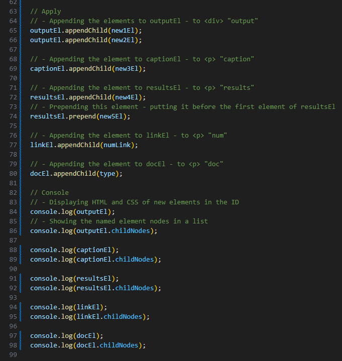

Lab 9: JavaScript for the Web
Challenge
To modify HTML and CSS elements of the page through JavaScript.
Problems
Initially, I was not aware that putting something into a div or paragraph while also trying to add or modify elements from the JavaScript would cause only what was written down in HTML to show. So, when I realized the issue, I made all affected div/paragraphs empty.
Results
The index.html for Lab 9, this time having various paragraphs and a link taken on by the JavaScript via empty ids. Otherwise features the same format and more images of documentation courtesy of extra tasks.
Lab 9's page, as seen from the local side. It has the Challenge / Problems / Results format, but various elements have been changed. A total of 5 div/ids were referenced and 7 new elements were created, all of which are avaliable to view in the console.
The published site of Lab 9. Bears no errors and all changed elements from the JavaScript file are able to be viewed in the console.
The first bonus task. In the standard format of retrieving and modifying elements from an id, applying those elements to it requires the function appendChild(). What this does is take the elemental node assigned to the variable and place it directly into the structure of the DOM, whether it is from a div or a paragraph. More specifically, it places the node into the last slot. To reverse that, then, requires the use of prepend(). This function does the exact opposite - it places the node before the first element of the list. So that's why even though new4El is declared and modified first, new5El is the one that is displayed both in the HTML and in the console first.
Links:
Document Element:
Task X's second option. Experimented with two methods outside of the scope of appendChild(), createElement(), and getElementById(). Normally, these would be used with the script tag inside of the HTML, as that method of retrieval is faster, however I was able to implement both of them inside the JavaScript file instead using the same methods as elements. Namely, the innerHTML was changed to reflect the prompt given to them. One was returning the document element, which in this case was HTML. The other, meanwhile, was to return the number of links on the index.html - as it was retrieved from the bottom of the page, the number came out to eight.